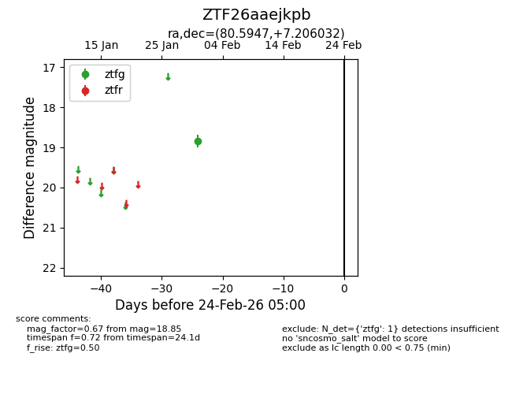
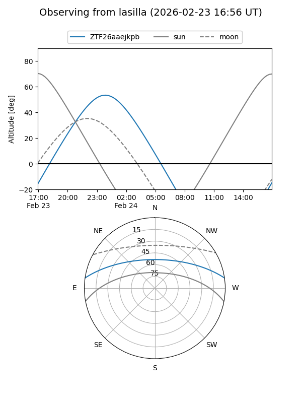
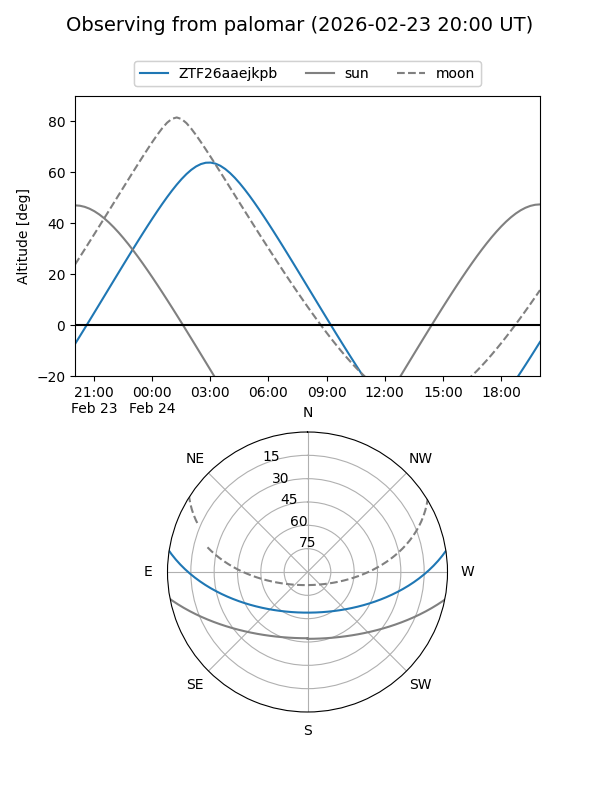

ZTF26aaejkpb
Target ZTF26aaejkpb at 2026-02-24 09:08
Aliases and brokers:
FINK: link
Lasair: link
ALeRCE: link
alt names
ZTF26aaejkpb (ztf,fink_ztf)
Coordinates:
equatorial (ra, dec) = 80.5947,+7.20603
equatorial (HMS+DMS) = 05:22:22.73,+07:12:21.72
galactic (l, b) = (195.7986,-16.10176)
Flags:
Photometry:
last ztfg=18.85
1 ztfg detections
Lightcurve

Visibility


Additional plots